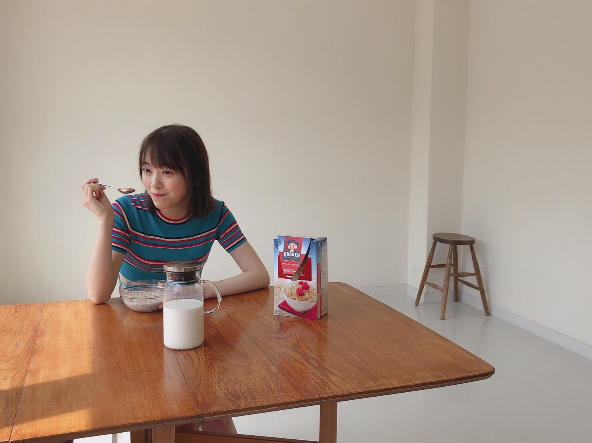
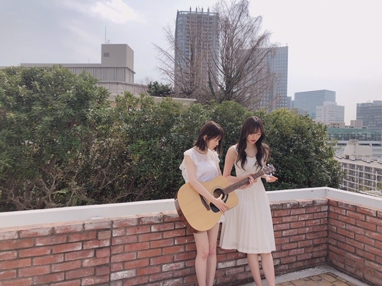
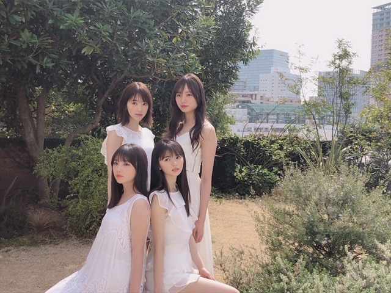
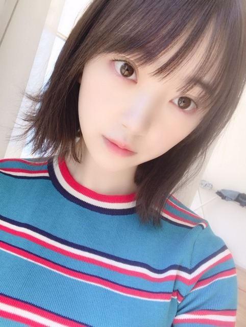

2019/0426Friロマンティック追求型
食パンはトーストが1番！
白米はお漬物があればいい！それが何よりも贅沢。っていうマツコデラックスさんの名言を深夜、夜ごはんを食べながらテレビを観ていて聞いたのですが
共感しかなくて
頷きが止まりませんでした

シンプルイズベスト という言葉をよく聞きますが、それは色んな工夫を楽しんだ後だから、原点であるシンプルな形が1番素材を感じられるんじゃないかという、"シンプル"への新鮮味や貴重さが増すのであって何がベストかは人それぞれが決めるものですよね
私は割と食べ物、インテリアはシンプルなものが好きだけど洋服は個性的なデザインのものが好きだしそういう人によって違う美的感覚や好みは面白いなぁと感じました
「オードリーヘップバーンの言葉」という本を買って面白くて1日で読んでしまったのですが、
例えばオードリーヘップバーンは"庭園"にこだわりを持っていたり、自分にとって重要度の低い事は受け流しても重要度の高い事は絶対に譲らない意志の強さがあったり、毎回宿泊先のホテルに自宅の家具インテリアを持ち込んで自分の家を作っていたり、そのオードリーヘップバーンならではの行動と考え方が非常に興味深くて、同性としてもかなり惹かれました。
私らしい生き方、考え方って多分自分ではわからない所も多いけど自分がこれ！と思った事には迷わず挑戦していきたいなぁ☺︎

明日、ヤングマガジン発売です！
梅ちゃん、よだちゃん、あすかと4人で表紙をやらせていただいています
カメラマンさんはお久しぶりのtakeoさん^-^
いつも素敵な写真を撮ってくださるし雰囲気も柔らかい方で信頼しています...
衣装もメイクも爽やかでとても素敵な仕上がりになっていますので是非見てください✨

ガールズバンドみたいな図

白がわたしは1番好きです
落ち着きます
そのままの私でいいんだなって、ありのままでいられる色
例えば派手な色を身につけた時にはまた違った自分になれる気がするし洋服やメイクは自分を変身させてくれる魔法みたいなものだから、大切にしています
明日は
札幌コレクション！
お待ちしています！！ウニたべれるかな〜

じゃ
2019/04/26 14:48
コメント(301)
再びコメントです☺
最初の載ってないや(笑)
あっ、ニュース見ていたら明日北日本降雪あるかもしれない？って。
天気確認したがよかよ❗
季節外れの雪みたい。
体調気をつけて頑張ってください❗
ほなね、堀ちゃん☺
最初の載ってないや(笑)
あっ、ニュース見ていたら明日北日本降雪あるかもしれない？って。
天気確認したがよかよ❗
季節外れの雪みたい。
体調気をつけて頑張ってください❗
ほなね、堀ちゃん☺
simple 伊豆 best！ヽ(￣▽￣)ノ・・・・Isじゃない‼️Σ(゜Д゜)お腹空いてると白米の味が染み渡るね└(ﾟ∀ﾟ└) (┘ﾟ∀ﾟ)┘ご飯のお供だけで丼飯！お供と友達。おっちゃんは、ふりかけ♪かな♪ヽ(´▽｀)/みおな♪は何？(゜ロ゜)
未央奈ブログ更新ありがとう！
シリアルを食べる姿も可愛い。
シンプルなものを好むのは余計なものをそぎ落とす美的感覚に通じるのかもね。
ヤンマガ買うよ。未央奈は白似合うね。
札幌コレクション頑張ってね。
シリアルを食べる姿も可愛い。
シンプルなものを好むのは余計なものをそぎ落とす美的感覚に通じるのかもね。
ヤンマガ買うよ。未央奈は白似合うね。
札幌コレクション頑張ってね。
こんばんは
普段の食事はシンプルが一番ですよね～
ファッション等は自分に合うのも大事だし、
生き方や考え方も自分のものだと思います◎
ヘップバーンの本を読んでいたのですねー！
未央ちゃんも色々とこだわりがありますね☆
ヤングマガジンもとっても楽しみですよー！
オフショットもいっぱい透明感があります♡
白が似合うし白くあって欲しいと思います！
札幌コレクションでは、弾けて下さいねー♪
ウニも食べられると良いですね～☺
普段の食事はシンプルが一番ですよね～
ファッション等は自分に合うのも大事だし、
生き方や考え方も自分のものだと思います◎
ヘップバーンの本を読んでいたのですねー！
未央ちゃんも色々とこだわりがありますね☆
ヤングマガジンもとっても楽しみですよー！
オフショットもいっぱい透明感があります♡
白が似合うし白くあって欲しいと思います！
札幌コレクションでは、弾けて下さいねー♪
ウニも食べられると良いですね～☺
北海道は、まだまだ寒いのかな？体調には、充分に、気を付けてね❗
堀ちゃん、ブログ更新ありがとう〜
パンは、トーストにバター
ご飯は、納豆です！
シンプルなのか分かりませんが、
私のベストです！
ヤンマガ絶対買うよー
チャンピオンの堀ちゃん、超絶かわいかった
ので明日かわ楽しみです！
個別握手会取れたので、
堀ちゃんに会いに行くねー
パンは、トーストにバター
ご飯は、納豆です！
シンプルなのか分かりませんが、
私のベストです！
ヤンマガ絶対買うよー
チャンピオンの堀ちゃん、超絶かわいかった
ので明日かわ楽しみです！
個別握手会取れたので、
堀ちゃんに会いに行くねー
お酒は温めの燗がいい、肴はあぶった
イカでいいって昔、演歌があったけど
それみたいだね。
そんな事をいいつつ、写真はお洒落な
朝食って感じだね。
オードリーさんは社会的にも立派な
活動をされて人ですよね。そんな彼女
の言葉に惹かれるのは、みおなちゃん
の心が清らかだからだと思います。
そういえば朝食の写真の服、フランス
っぽいね、可愛い。
イカでいいって昔、演歌があったけど
それみたいだね。
そんな事をいいつつ、写真はお洒落な
朝食って感じだね。
オードリーさんは社会的にも立派な
活動をされて人ですよね。そんな彼女
の言葉に惹かれるのは、みおなちゃん
の心が清らかだからだと思います。
そういえば朝食の写真の服、フランス
っぽいね、可愛い。
ブログの更新ありがとう。
大阪のアルバムの握手会に行く予定だよ。
久しぶりに未央奈に会えるから楽しみにしているね。
ゴロ～
大阪のアルバムの握手会に行く予定だよ。
久しぶりに未央奈に会えるから楽しみにしているね。
ゴロ～
未央奈可愛い！札幌楽しんでねいいね。
洋服は個性的なのが好きと言ってすぐに白が一番好きときた。さすが掘ちゃん
6月の宮城の個握当たったから行くね!!
人生初握手会だからド緊張してるかもだけど、よろしくです!!
人生初握手会だからド緊張してるかもだけど、よろしくです!!
明後日の握手会行きます！！
今日のブログでますます楽しみになりました
体調にだけは気を付けて！！
今日のブログでますます楽しみになりました
体調にだけは気を付けて！！
お久しぶり～です☆
シンプルに…
シリアルが…
いいかもね……(笑
ご活躍☆
応援します♪
では…
(^_-)
シンプルに…
シリアルが…
いいかもね……(笑
ご活躍☆
応援します♪
では…
(^_-)
ブログ更新ありがとー！
シンプルイズベスト...意外と深い意味
を持ってそう。
シンプルイズベスト...意外と深い意味
を持ってそう。
未央奈ブログ更新ありがとー！
札幌コレクション楽しんでねー！
札幌行きたいよ〜
未央奈大好き！
札幌コレクション楽しんでねー！
札幌行きたいよ〜
未央奈大好き！
みおなちゃん更新ありがとう╰(*´︶`*)╯♡
回り回ってシンプルがしっくりきますね(*´꒳`*)
他の方の生き方でも自分に取り込めるものであれば参考にするのは良き事ですね（╹◡╹）♡
ヤングマガジン見るねー(*´-`)
写真もありがとう
白のお洋服も似合いますね(● ˃̶͈̀ロ˂̶͈́)੭ꠥ⁾⁾
札幌コレクション頑張ってねー٩(๑❛ᴗ❛๑)۶
ウニ食べられたら良いね♪(๑ᴖ◡ᴖ๑)♪
回り回ってシンプルがしっくりきますね(*´꒳`*)
他の方の生き方でも自分に取り込めるものであれば参考にするのは良き事ですね（╹◡╹）♡
ヤングマガジン見るねー(*´-`)
写真もありがとう
白のお洋服も似合いますね(● ˃̶͈̀ロ˂̶͈́)੭ꠥ⁾⁾
札幌コレクション頑張ってねー٩(๑❛ᴗ❛๑)۶
ウニ食べられたら良いね♪(๑ᴖ◡ᴖ๑)♪
こんにちは‼︎
ブログ更新、ありがとうございます♪
マツコさんとか、オードリー・ヘップバーンさんとか、いろんな人からインスピレーションを得ているみたいですね‼︎
いいこといいこと♪
シンプルがベストだと気がつくのは、いろんな試行錯誤を繰り返した果てに気がつくもの。
自分は、未央奈のその考え方に共感して、頷きが止まりません(笑)。
パンは、トーストが一番美味しい…‼︎
特にいいパンを食べる時は、パン自体の甘みも感じられるし、柔らかさも香ばしさも楽しめるので、トーストがいいですよね♪
ごはんもそう。
お新香だけとか、梅干しだけとか。
その方がごはん自体の美味しさを感じられる気がします♪
そして、未央奈は白のドレスが似合う…‼︎
まっさらで飾らないドレスの方が、未央奈の透明感、素材の良さが際立つ気がします♪
ヤングマガジン、チェックしますね‼︎
そうそう、755での未央奈のコメントにも感銘を受けました。
言葉には、良くも悪くも凄い力がある。
どうせなら、良いことに使いたいですよね♪
自分も、言葉で人を勇気づけたり、癒したりできる人間になりたいです…‼︎
お互い頑張りましょう♪
ではでは、また。
明日も未央奈にとっていい1日になりますように♪
ブログ更新、ありがとうございます♪
マツコさんとか、オードリー・ヘップバーンさんとか、いろんな人からインスピレーションを得ているみたいですね‼︎
いいこといいこと♪
シンプルがベストだと気がつくのは、いろんな試行錯誤を繰り返した果てに気がつくもの。
自分は、未央奈のその考え方に共感して、頷きが止まりません(笑)。
パンは、トーストが一番美味しい…‼︎
特にいいパンを食べる時は、パン自体の甘みも感じられるし、柔らかさも香ばしさも楽しめるので、トーストがいいですよね♪
ごはんもそう。
お新香だけとか、梅干しだけとか。
その方がごはん自体の美味しさを感じられる気がします♪
そして、未央奈は白のドレスが似合う…‼︎
まっさらで飾らないドレスの方が、未央奈の透明感、素材の良さが際立つ気がします♪
ヤングマガジン、チェックしますね‼︎
そうそう、755での未央奈のコメントにも感銘を受けました。
言葉には、良くも悪くも凄い力がある。
どうせなら、良いことに使いたいですよね♪
自分も、言葉で人を勇気づけたり、癒したりできる人間になりたいです…‼︎
お互い頑張りましょう♪
ではでは、また。
明日も未央奈にとっていい1日になりますように♪
未央奈ちゃん、こんばんは。４期生の掛橋沙耶香さんと二人で写ってる、少年マガジンの表紙の、未央奈ちゃんが凄くいい！ナチュラルな表情がいいのかもしれないね。微笑みが凄くさわやか。ブログの艶っぽい写真と、こうしたナチュラルな感じの写真が、ここ最近では特にいい感じがする。比較するのはあんまり良くないのかもしれないけど、西野さんが手に入れた笑顔に近いものかもしれない。優しい表情がとてもいい。掛橋さんとも馴染んでいる。また少し楽しみが増えた。またね！
オートミール美味しい？一回だけ食べたことあるけど俺はあんま好きじゃないね。でも未央奈が食べてると食べたくなってきた！！！
white shining未央奈
みおな、こんばんは。更新ありがとう！ ヤングマガジン楽しみです。 やっぱり、みおなに白衣装とっても似合ってますね！ 明日も楽しんで下さい。 では、毎日みおなに良いこと沢山ありますように！ おやすみおな！！
かわいいー
再び再びコメント(笑)
ごめんやで❗
俺だけだろうか？
普通に思いや感想や諸々を書いて、なかなか掲載されないのは？
残念やね。
ブログ読んでコメント書いてって楽しみです。
乃木坂メンバーのブログも好きや。
残念やね。
仕方ないのかな？
ブログ見るのも書くのも消極的になりそうです。
さてさて、明日は天気ホンマ気をつけてね。
格好良く、可愛く頑張れ～☺
ほなな、堀ちゃん。
ごめんやで❗
俺だけだろうか？
普通に思いや感想や諸々を書いて、なかなか掲載されないのは？
残念やね。
ブログ読んでコメント書いてって楽しみです。
乃木坂メンバーのブログも好きや。
残念やね。
仕方ないのかな？
ブログ見るのも書くのも消極的になりそうです。
さてさて、明日は天気ホンマ気をつけてね。
格好良く、可愛く頑張れ～☺
ほなな、堀ちゃん。
堀ちゃんお疲れ様です！
レコメン今週もノリさんとのトーク笑えました！
僕も白色が大好きです！自分色に染めるっていうのがいいですよね！
4人の表紙楽しみにしてます！
明日も頑張ってください！！
レコメン今週もノリさんとのトーク笑えました！
僕も白色が大好きです！自分色に染めるっていうのがいいですよね！
4人の表紙楽しみにしてます！
明日も頑張ってください！！
ウニ食べられると良いねー！！
大好きっ！
大好きっ！
堀ちゃんこんにちは。
ブログ更新油断してたよ、気付くのが遅れたよ。
やっぱシンプルイズベストだよね。
個人的に部屋は畳に障子が一番落ち着くよね。
トーストはバターかマーガリンを付けちゃうけどね。
札幌ではウニ食べれるといいね。
がんばれ堀ちゃん バイバイキーン
ブログ更新油断してたよ、気付くのが遅れたよ。
やっぱシンプルイズベストだよね。
個人的に部屋は畳に障子が一番落ち着くよね。
トーストはバターかマーガリンを付けちゃうけどね。
札幌ではウニ食べれるといいね。
がんばれ堀ちゃん バイバイキーン
最近雑誌の表紙がすごい続いとるよね！
嬉しい！！！
僕の分までウニ食べてきて〜
嬉しい！！！
僕の分までウニ食べてきて〜
ブログ更新ありがとう！7月28日の個握4部行きます！待ってて！
未央にゃブログ更新有難う
札幌コレクション頑張ってね( ^ω^ )
ウニも頑張ってねww
札幌コレクション頑張ってね( ^ω^ )
ウニも頑張ってねww
ブログ更新ありがとう！
今度握手会行くので楽しみにしてます！
札幌たのしんでねー！
今度握手会行くので楽しみにしてます！
札幌たのしんでねー！
未央奈お疲れ様！
ブログ更新ありがとう！
トースト最高だよね！
漬物ならたくあんかな笑
未央奈の言葉にめっちゃ心打たれた
おれも未央奈みたいに自分らしく挑戦したい！
ちなみに白おれも一番好き！
珍しいペアだね！笑
このペアおれめっちゃすき！
札幌か〜笑いいな〜笑
これからも応援してる！
がんばれー！
ブログ更新ありがとう！
トースト最高だよね！
漬物ならたくあんかな笑
未央奈の言葉にめっちゃ心打たれた
おれも未央奈みたいに自分らしく挑戦したい！
ちなみに白おれも一番好き！
珍しいペアだね！笑
このペアおれめっちゃすき！
札幌か〜笑いいな〜笑
これからも応援してる！
がんばれー！
そっか～
牛乳にフレーク
がシンプルなんですね(笑)
確かに、シンプル思考はそういうものだと思います。
色々とね。挑戦してね。その先･･･
トーストにマーガリン塗って、きな粉塗ったり･･･
白米は
あ！
白米様は、結局どんぶりにしちゃったり･･･
･･･自宅の家具インテリア持ち込みってすごいね！
あ、まだ食べてる･･･
歌うのはやっぱり
「ごはんはおかず」？(笑)
白か～
自由に染まれる色ですね。
雲丹･･･
北海道、雪だったらしいですよ。
牛乳にフレーク
がシンプルなんですね(笑)
確かに、シンプル思考はそういうものだと思います。
色々とね。挑戦してね。その先･･･
トーストにマーガリン塗って、きな粉塗ったり･･･
白米は
あ！
白米様は、結局どんぶりにしちゃったり･･･
･･･自宅の家具インテリア持ち込みってすごいね！
あ、まだ食べてる･･･
歌うのはやっぱり
「ごはんはおかず」？(笑)
白か～
自由に染まれる色ですね。
雲丹･･･
北海道、雪だったらしいですよ。
未央奈ブログ更新ありがとう〜〜
朝はパンもご飯も捨てがたいですよね！自分はご飯に納豆をかけて食べるのが好きなんですよ。
白色の服似合ってます！未央奈も白くて美しい！
札幌のコレクションと大阪の個握頑張って、応援しています！
朝はパンもご飯も捨てがたいですよね！自分はご飯に納豆をかけて食べるのが好きなんですよ。
白色の服似合ってます！未央奈も白くて美しい！
札幌のコレクションと大阪の個握頑張って、応援しています！
未央奈、ブログ更新ありがとう！！
僕も漬物と白米、最高やでー！！
札幌いいなー、
ヤンマガも買うよー！！
僕も漬物と白米、最高やでー！！
札幌いいなー、
ヤンマガも買うよー！！
札幌コレクションがんばって
いーーっぱい食べてください(^ ^)
いーーっぱい食べてください(^ ^)
こんばんみーお♪
ブログありがとう！
今、京急で大鳥居駅に向かっているよ。
今日は、そこのホテルに泊まって、
明日の朝早くに、羽田空港まで
ホテルの車で送ってもらうんよ。
今夜は、そんなに寝られんなぁ〜
って、いつも寝てないけど。。。
明日、団扇を持っているから
見つけてね〜
アイドルへの王道コメント☆笑
まぁ、お互いに楽しもうね〜♪
堀未央奈 in Sapporo
楽しみ！！
では、ウニを食べられるといいね〜♪
では、
おやすみおな〜♪
いい夢みおな〜☆
わたる⊿
ブログありがとう！
今、京急で大鳥居駅に向かっているよ。
今日は、そこのホテルに泊まって、
明日の朝早くに、羽田空港まで
ホテルの車で送ってもらうんよ。
今夜は、そんなに寝られんなぁ〜
って、いつも寝てないけど。。。
明日、団扇を持っているから
見つけてね〜
アイドルへの王道コメント☆笑
まぁ、お互いに楽しもうね〜♪
堀未央奈 in Sapporo
楽しみ！！
では、ウニを食べられるといいね〜♪
では、
おやすみおな〜♪
いい夢みおな〜☆
わたる⊿
かわいい！
シンプルは無敵ですよね。
札幌コレクション、SS席で見てます。
とても楽しみにしています。
雪が降るくらい寒いので、お気をつけて。
バフンウニ食べられるとイイですね。
札幌コレクション、SS席で見てます。
とても楽しみにしています。
雪が降るくらい寒いので、お気をつけて。
バフンウニ食べられるとイイですね。
みおたん、お疲れ様です。
トーストで、マーガリンかバターを塗り、
その上にハチミツを塗ると、
なんと、美味しい食べ物の出来上がり！
最高に美味しいバターハチミツトーストです。
これに勝てるトーストはありません。
みおたんも是非食べてみてください。
ご飯でシンプルで美味しいのは卵かけご飯と、
とろろご飯が美味しいです。
とろろご飯は何杯でもいけます。
755で温泉を紹介してとの事なので、紹介します。
奥蓼科の横谷温泉旅館の温泉です。
武田信玄の隠し湯とも言われてるみたいです。
歩いてすぐの所に乙女滝という、乙女というよりは、
じゃじゃ馬のような滝があります。
そして信州は縦に長かったり、標高差があるので、
4月から5月の初めにかけて桜が見れます。
花桃も結構あるしね。
蓼科湖の北にある聖光寺しょうこうじは今蕾なので、
来週は見頃になります。聖光寺は交通安全のお寺で、
トヨタが作ったそうです。
明日は糸萱区民会館いとがやのタカトウコヒガンザクラを
見てきます。
アルバムについている写真がAが飛鳥でBが梅ちゃんで、
ああ、みおたんの写真はないのかなと、落ち込んでいました。
最後の頼みの限定盤がなんと、なんと、なんと、
みおたんのアップ写真がでました。ガッツポーズです。
嬉しかった！
凄く確率低くいのに、ミニ宝くじに当たった気分！
少しは運が向いてきたかな？
それでは、健康第一で！
信州のミッキイでした！
トーストで、マーガリンかバターを塗り、
その上にハチミツを塗ると、
なんと、美味しい食べ物の出来上がり！
最高に美味しいバターハチミツトーストです。
これに勝てるトーストはありません。
みおたんも是非食べてみてください。
ご飯でシンプルで美味しいのは卵かけご飯と、
とろろご飯が美味しいです。
とろろご飯は何杯でもいけます。
755で温泉を紹介してとの事なので、紹介します。
奥蓼科の横谷温泉旅館の温泉です。
武田信玄の隠し湯とも言われてるみたいです。
歩いてすぐの所に乙女滝という、乙女というよりは、
じゃじゃ馬のような滝があります。
そして信州は縦に長かったり、標高差があるので、
4月から5月の初めにかけて桜が見れます。
花桃も結構あるしね。
蓼科湖の北にある聖光寺しょうこうじは今蕾なので、
来週は見頃になります。聖光寺は交通安全のお寺で、
トヨタが作ったそうです。
明日は糸萱区民会館いとがやのタカトウコヒガンザクラを
見てきます。
アルバムについている写真がAが飛鳥でBが梅ちゃんで、
ああ、みおたんの写真はないのかなと、落ち込んでいました。
最後の頼みの限定盤がなんと、なんと、なんと、
みおたんのアップ写真がでました。ガッツポーズです。
嬉しかった！
凄く確率低くいのに、ミニ宝くじに当たった気分！
少しは運が向いてきたかな？
それでは、健康第一で！
信州のミッキイでした！
ロマンティックと来れば、イカ焼き。
イカ大王によるイカ焼き？！
この手札で、イカ大王を特殊召喚する！！
だが、遊戯みたいには、いかなあ～い！！
特殊召喚出来なあぁァ～い！！
イカ大王によるイカ焼き？！
この手札で、イカ大王を特殊召喚する！！
だが、遊戯みたいには、いかなあ～い！！
特殊召喚出来なあぁァ～い！！
可愛い!!!
可愛いすぎる
可愛いすぎる
ブログ更新ありがとう！
未央奈が着る服は本当に未央奈らしいというか、未央奈の個性が溢れてていいなって思うし、「あ、こういう服もあるのか」とか「こういうスタイリングもあるのか」と男ながら感心するし勉強させてもらってます。
いつもモバメありがとね。
明日の札幌コレクションも頑張ってね。
応援してます。
未央奈が着る服は本当に未央奈らしいというか、未央奈の個性が溢れてていいなって思うし、「あ、こういう服もあるのか」とか「こういうスタイリングもあるのか」と男ながら感心するし勉強させてもらってます。
いつもモバメありがとね。
明日の札幌コレクションも頑張ってね。
応援してます。
食パン、大好き。今日、買って帰りました。明日は休みで
、ゆっくりと。朝食は、トーストです。ハム、目玉焼き、のせて食べます。美味しいですよね。
、ゆっくりと。朝食は、トーストです。ハム、目玉焼き、のせて食べます。美味しいですよね。
未央ちゃん
ブログ更新ありがとう
俺はブレブレで
カッコ悪いです
御御御付も着けたら
朝ごはん最高
パンも食べるけど(笑)
体調気をつけて
お仕事頑張ってね
ブログ更新ありがとう
俺はブレブレで
カッコ悪いです
御御御付も着けたら
朝ごはん最高
パンも食べるけど(笑)
体調気をつけて
お仕事頑張ってね
私もウニ食べたいなー(￣･ω･￣)堀ちゃん肌がすんごい白いから白の洋服来たら堀ちゃんが服と同化して見えなくなっちゃいそうʬʬʬ
こんばんはー。セブンやよ(ฅ'ω'ฅ)♪
今日も1日お疲れさまでした
オレも服は個性的なものが好きです
服だけでなくインテリアとかもなんか面白いなとか可愛いのが好き
生き方も個性的なのか人と意見が合わないことが多いけど
それでも自分を通して生きていきたい
人に迷惑かけなければ自己中でもいいと思うのです
未央奈も自分を信じてやりたいことやって生きていこうね
最後の写真めっちゃ好き♡
可愛すぎます♡
では、明日も1日楽しもうd(@^∇ﾟ)/ﾌｧｲﾄｯ♪
おやすみおな☪️
今日も1日お疲れさまでした
オレも服は個性的なものが好きです
服だけでなくインテリアとかもなんか面白いなとか可愛いのが好き
生き方も個性的なのか人と意見が合わないことが多いけど
それでも自分を通して生きていきたい
人に迷惑かけなければ自己中でもいいと思うのです
未央奈も自分を信じてやりたいことやって生きていこうね
最後の写真めっちゃ好き♡
可愛すぎます♡
では、明日も1日楽しもうd(@^∇ﾟ)/ﾌｧｲﾄｯ♪
おやすみおな☪️
堀ちゃん、こんばんわ＼(・ω・)／
僕は食パンにハムとレタスとチーズを挟んで朝食に食べていて、「やっぱり朝食はこれこれ～！」って思った
・・・数日後、パンに具材を挟むのが面倒臭くなり、今はマーガリンとジャムを行き来しているよ。
実は僕もけっこうこだわりが強いほうだよ。
何か物を選ぶにしても、自分が満足するまで「あーでもない、こーでもない」というふうにずっと考えたりしてしまう
そういえば今日ツイッターを見ていたんだけど、BRODYさん6月号の表紙が堀ちゃんときいちゃんだったね。
明日コンビニに行くから、ついでに探して来ようかな。
僕は食パンにハムとレタスとチーズを挟んで朝食に食べていて、「やっぱり朝食はこれこれ～！」って思った
・・・数日後、パンに具材を挟むのが面倒臭くなり、今はマーガリンとジャムを行き来しているよ。
実は僕もけっこうこだわりが強いほうだよ。
何か物を選ぶにしても、自分が満足するまで「あーでもない、こーでもない」というふうにずっと考えたりしてしまう
そういえば今日ツイッターを見ていたんだけど、BRODYさん6月号の表紙が堀ちゃんときいちゃんだったね。
明日コンビニに行くから、ついでに探して来ようかな。
Hay未央奈(･∀･∩)
俺は白米と納豆と漬物と味噌汁とデザードがあれば幸せかな(ぜいたく)
“バースデーワンダーランド“を公開初日に観てきた(^^)
松岡茉優さんが主人公のあかねの声をあててたよー現実世界ではふつうの少女が、ファンタジーの世界に導かれて、人々や移り変わる景色、世界の広さを知って、心の成長をしていく物語かな？未央奈が好きなあの有名キャラクターがカメコ？出演してた。笑
俺は泣けなかったけど、未央奈はガチ泣きそうだから観に行くならハンカチを忘れず。笑
おやすみおなー
俺は白米と納豆と漬物と味噌汁とデザードがあれば幸せかな(ぜいたく)
“バースデーワンダーランド“を公開初日に観てきた(^^)
松岡茉優さんが主人公のあかねの声をあててたよー現実世界ではふつうの少女が、ファンタジーの世界に導かれて、人々や移り変わる景色、世界の広さを知って、心の成長をしていく物語かな？未央奈が好きなあの有名キャラクターがカメコ？出演してた。笑
俺は泣けなかったけど、未央奈はガチ泣きそうだから観に行くならハンカチを忘れず。笑
おやすみおなー
目の前のことに一生懸命な堀ちゃんは素敵だ。
だから、目の色変えてたくさん食べている時も素敵だと思う。
だから、目の色変えてたくさん食べている時も素敵だと思う。


今日も安定に可愛かった